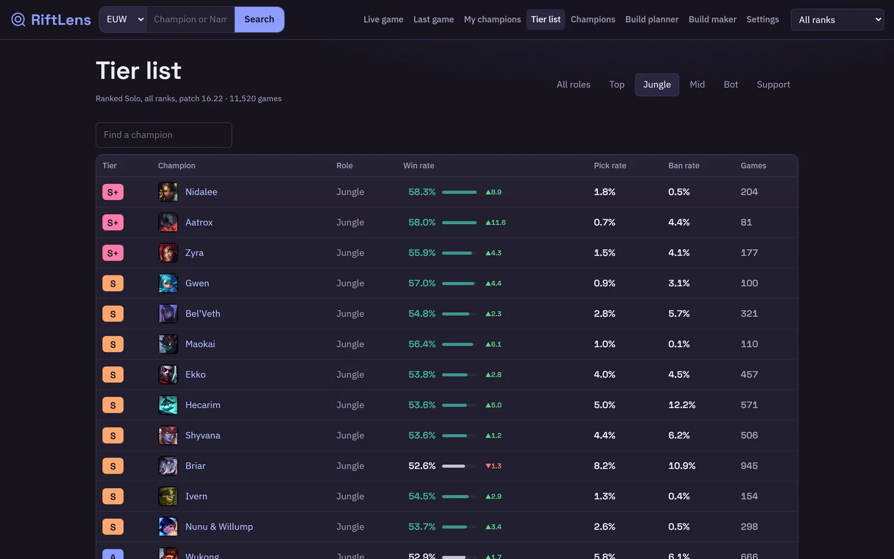
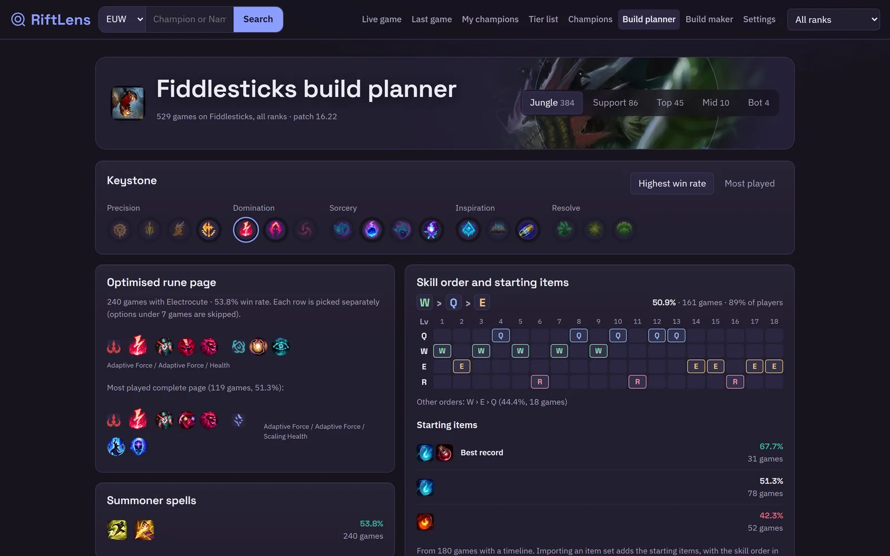
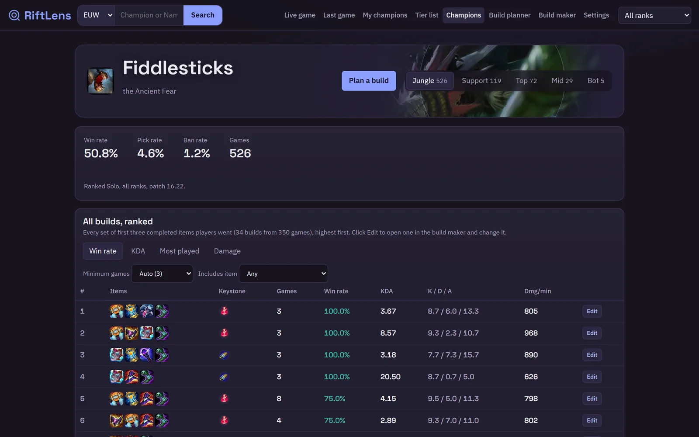
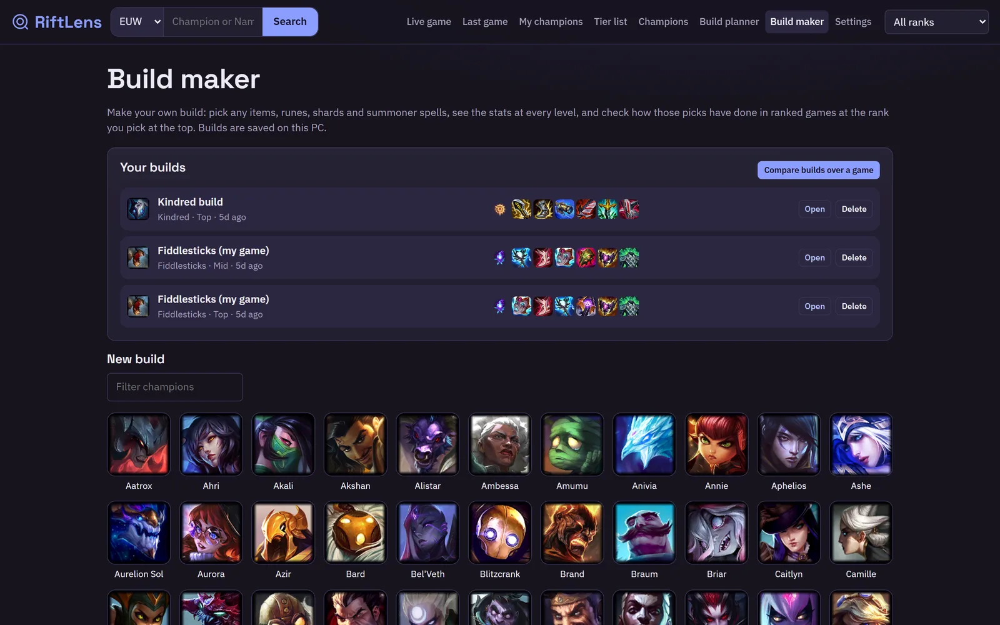
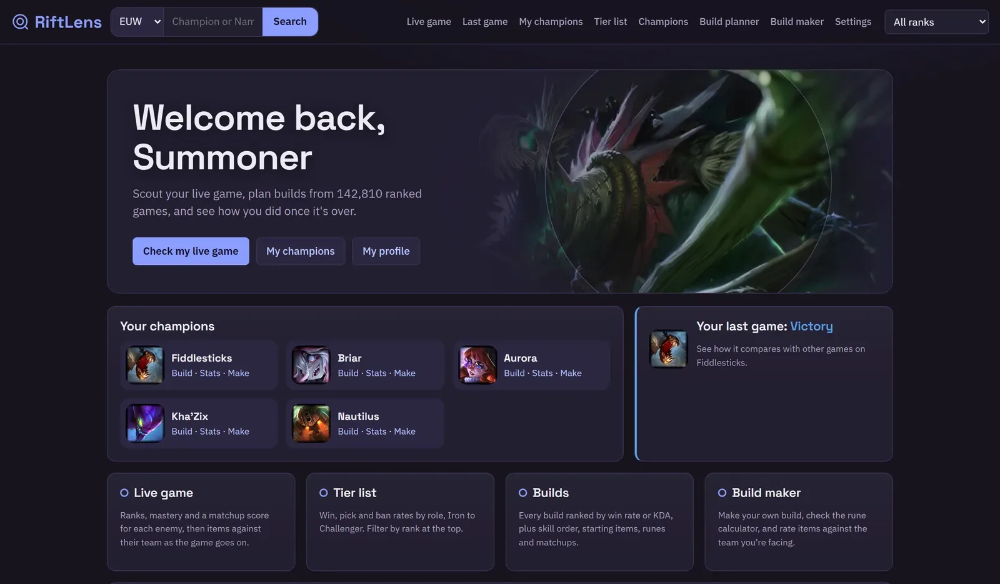

Tier list with trends
Win, pick and ban rates by role, Iron to Challenger. Arrows show which champions moved since the last patch.
RiftLens is a free League of Legends companion for Windows. It scouts your live game, times objectives, and plans builds from thousands of ranked games, including off-meta builds you make yourself.
RiftLens reads the League client and the game's own live data on your PC, then adds ranked statistics from Riot's official API. It suggests options and explains them, and you decide.
Pick ideas for your role and lane opponent, ban ideas against your champions, and what your team is missing, such as magic damage or a frontline.
Objective timers, the gold lead, and items worth buying against the enemy team. It re-checks what they've built every 10 minutes.
The best-record items, runes, skill order and starting items for each champion and role, filtered by rank.
Make any build, see its stats at every level, and compare builds over the early, mid and late game.
How much damage, healing or shielding each rune is worth for your build, so off-meta pages can be judged fairly.
Grievous Wounds, crit reduction, stasis, shield breaking and more are weighed against the team you're actually facing, not just raw stats.
Win, pick and ban rates by role, Iron to Challenger. Arrows show which champions moved since the last patch.

Runes optimised row by row, the skill order most winners use, and starting items, all from ranked games at your rank.

Each champion's builds sorted by win rate, KDA, popularity or damage. Open any of them in the build maker to change it.

Save your own builds, then compare them over a full game to see which is stronger early, mid and late.

The home screen keeps your most-played champions one click away, with your last game and how it compared.

RiftLens only shows what any player can already see or look up, and it never plays the game for you.
Riot's official API for public ranked match data, the League client's champion select screen, and the game's own live data, which is the same information as your scoreboard.
Champion and item art comes from Riot's Data Dragon.
It doesn't read game memory, reveal hidden information such as enemy positions or cooldowns, automate anything in game, or tell you what you must do. Every suggestion is an option with its reasons.
The app works today and is being tested. A public download needs Riot's approval of a Production API key first, so that stats come from one shared server and nobody has to paste their own key.
Questions, ideas or bug reports: open an issue on GitHub.